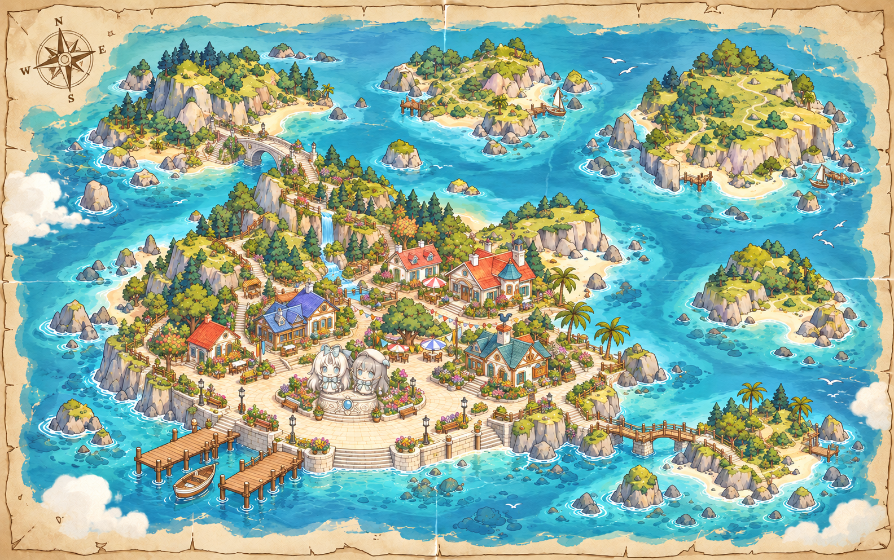

不吱岛 · 群岛地图画稿
新版画稿：扩大主岛码头广场，保留两位岛主的并肩雕像；新增西北石拱桥、东南木栈道，以及连接建筑与海岸的石阶和平台。功能建筑仍集中在主岛，周围小岛暂不命名、不分配用途。尚未替换现有网页。

如果图片仍未显示，请点击上方「打开原图 / 放大查看」。
新版画稿：扩大主岛码头广场，保留两位岛主的并肩雕像；新增西北石拱桥、东南木栈道，以及连接建筑与海岸的石阶和平台。功能建筑仍集中在主岛，周围小岛暂不命名、不分配用途。尚未替换现有网页。

如果图片仍未显示，请点击上方「打开原图 / 放大查看」。